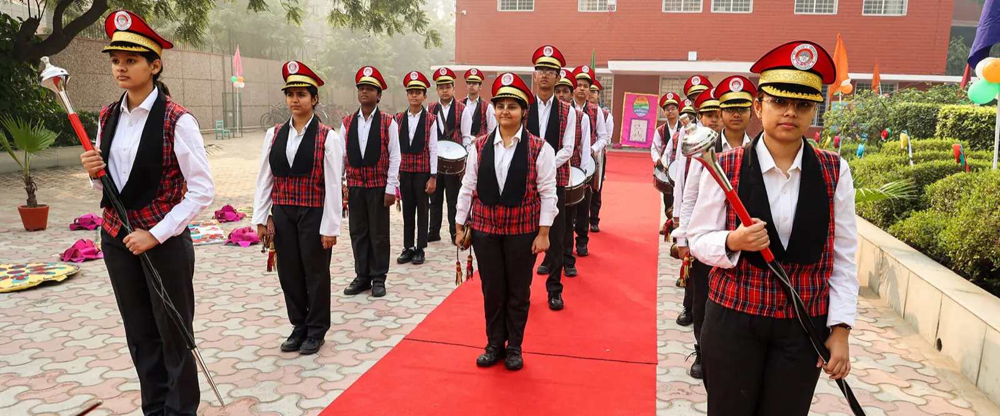
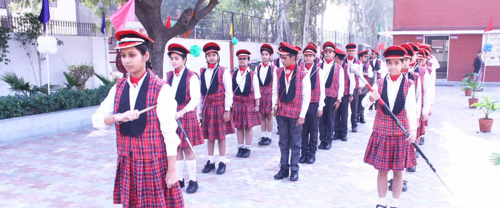
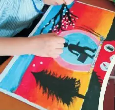

The stage
Annual Day, folk dances from across India and prize days all happen here, in front of the whole school.
- Room for full-class choirs and dance troupes
- Auditoriums
- 2
- Seats
- 130 and 100
Red-brick buildings, lawns and hedges, a stage for every Annual Day, and the space every child needs to run.

Where we have photographs, you can see them. The figures below are the school's own, from its published infrastructure details.
Annual Day, folk dances from across India and prize days all happen here, in front of the whole school.

Wide lawns, shady trees and paved courtyards for assemblies, band practice, the march-past and recess.

Painting, sketching and craft are part of every week, from Nursery onwards. The best work goes up on the corridor walls.
Bright, ventilated rooms with boards and projection for every section.
Physics, chemistry and biology labs for practical work in the senior classes.
Computers for every child in the lab period, from the primary classes up.
Books for every age, weekly library periods and a quiet place to read.
Ground for athletics, team games and Sports Day, and space for indoor games.
Space for the choir, the school band and dance practice.
First aid on site and a quiet room for children who feel unwell.
Purified drinking water and clean toilets on every floor.
Trees, hedges and lawns across four acres.
Details on this page are drafted for the school to check and correct.
Parents should never have to wonder whether their child is safe at school. These are the arrangements the website will publish once the school confirms them.
School buses cover routes across Faridabad. With the new parent app, families can follow their child's bus stop by stop and get a message two stops before home.
| Route | Areas |
|---|---|
| Route list | To be added by the transport office |
| Pick-up | Times are shared with each family when the route is assigned |
| Changes | Request a route or stop change from the parent app |
The best way to know a school is to walk round it. Ask the office about a campus visit with your child.